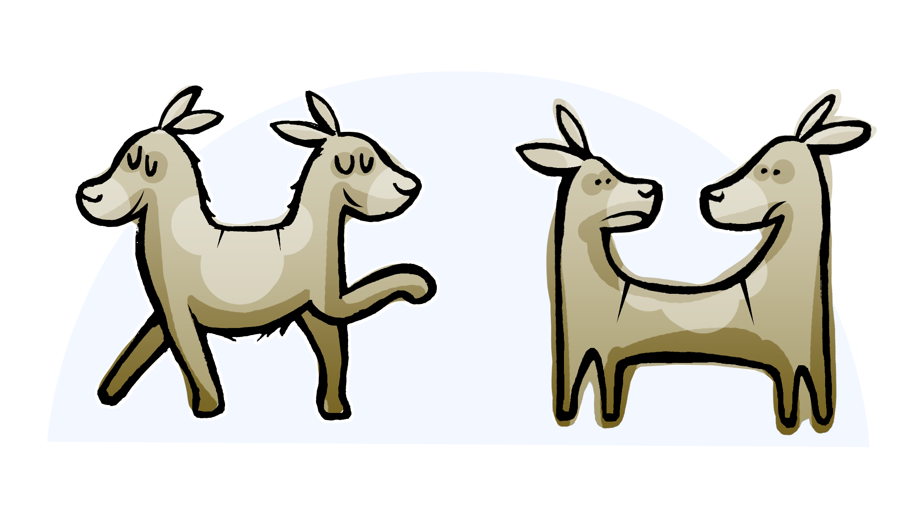
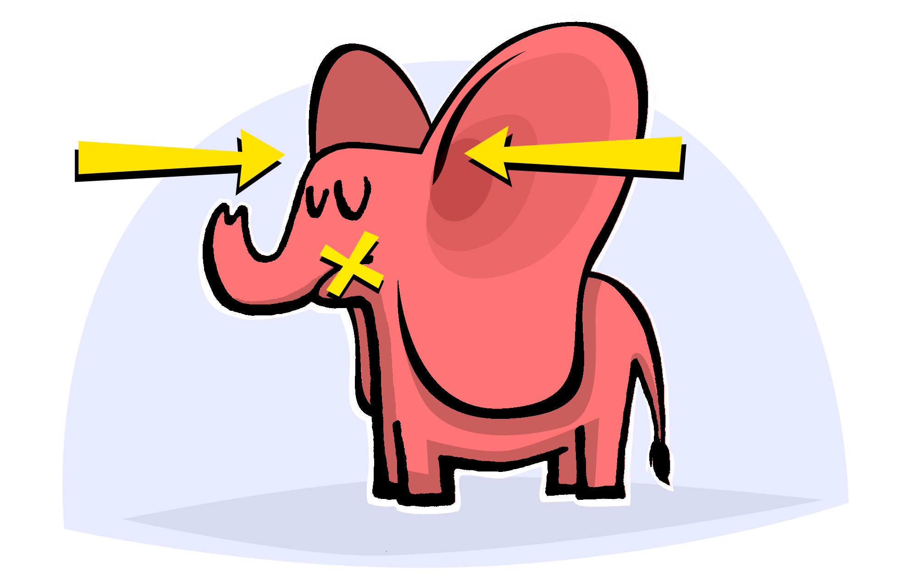

During Youth Group 1 (YG1), the group leaders will talk about how the meetings will work, emphasize confidentiality, and begin to discuss the feelings and worries that are common for youth living with HIV. Topics include:
(Jointly with Caregivers)
Greeting: Tea and bites (15 minutes)
Getting to know one another
Introduction to the program
New topic: Worries with HIV/AIDS
Homework assigned
Fun time
We are so glad you are all able to be here. Today we are going to talk about how the program works. We want to stress the importance of arriving on time, coming prepared and ready to learn, being engaged in the sessions, and respecting confidentiality and safety with both your youth group and with the caregivers.
We will also have a discussion about the kinds of worries that youth with HIV/AIDS have told us about — you may share some of your own worries in the group. You can join in the conversation if you like or just listen.
(10 minutes)
We will start by getting to know each other.
GROUP ACTIVITY - Engage with group members as they join with one another. The group makes a circle standing with the group leaders for these activities.
Start with something fun: With the group in a circle, throw a ball to each other around the circle. As each person catches the ball he/she shouts their own first name. Keep going until names have been shouted at least twice.
Then, the youth and group leaders say the name of another person and throw the ball to him/her.
The group can also play a game throwing the ball with questions you and the youth both answer. Questions may be like “what is your favorite music or sport?”
(20 minutes)
Group leaders describe how the group meetings will work every week.
Provide handout to the youth (YG Handout 1) for dates, times of groups, and names and phone numbers of the group leaders.
Discuss about how the groups will work:
Discuss travel reimbursement and consequences for being late. o An example of support for punctuality may be giving star stickers in order to earn a small prize at the final party for those who consistently arrived on time.
xxxxxxxxxxThe best incentive is reinforcing the group norm for being on time for each meeting.
Emphasize expectations for attendance.
Show the general group schedule on handout YG Handout 1. 1) Tea and social gathering 2) Brief review of what happened in the previous meeting (if applicable) 3) Review homework assigned from last group (if applicable) 4) New topic: discussion and practice 5) Assign new homework 6) Fun time – games and play
Emphasize expectations for youth and caregiver/other adult support regarding confidentiality.
There are serious issues about confidentiality to discuss!
• Describe the importance of confidentiality in the group: What is said in the group stays in the group.• Discuss that what the youth talk about in the group is confidential. They candiscuss, in general, their personal experiences with a caregiver or friend but never talk with others about someone else who is in the group.• The youth cannot tell anyone (including their caregiver or other support adults) what other youth have talked about in the group. To do so would violate their promise of confidentiality.

xxxxxxxxxxThe group leaders will only discuss the youth with their caregiver if there is a fear about safety, such as the youth may harm someone or hurt themselves.
Do we all agree to the promise of confidentiality?
At this point the caregiver group will go to a separate room, and the youth will continue in their usual room (see script at the end of Youth Group 1 for caregiver only dialogue.)
(25 minutes)
Let us talk about: What is health? What is good physical health? (Examples may include: not having a fever, feeling good to run and play football and to do daily chores like fetching water, sweeping the floor).
What is good mental health (such as, being able to handle worries and difficulties that come in everyone’s life)?
Here are some worries we have learned from other youth living with HIV. I am going to name some of these as they are listed on your Youth Group Handout 2. Can anyone think of worries that other youth may have? Please tell us, and we will add to the list.
xxxxxxxxxx• Use handout with lists split down middle as shown below.• Review the list of worries on YG Handout 2. Ask youth to think about additional worries other people may have (not necessarily their own worries).• Add to list of worries using YG Handout 2 as volunteered by the group members in the group activity described below.
Handout for Stress, Worries, and Coping (YG Handout 2). Participants can take the handout home or leave it with group leaders for next week.
YG Handout 2. Stress and worries Things that can help youth cope Worry about remembering to take medicine Worry I might die Worry about others knowing I have HIV
GROUP ACTIVITY - Group members get into groups of 2-3 and fill out some of the things youth (in general) worry about when living with HIV. Ask the group to just make a list on the left side of the handout. Ask one group to report what they wrote, then other groups can add any worries they wrote down that were not included on others’ lists. Group leaders list these worries on a whiteboard/flip chart.
Your group leaders believe that naming worries is the first step to thinking about ways to cope and learning to do some things to feel better and be less worried.
We think you already know that many of these worries are common. They are “normal” for youth who are thinking about their illness or other problems. Youth with HIV infection want to just be like everyone else, to go to school, to have friends, and to experience all the good things about growing up and becoming an adult.
Naming these worries and finding ways to feel better are just a few of the ways that this program can help you. We will continue 1) naming worries and 2) thinking about ways to cope. Next week we will also practice some ways of calming the mind and the body. Later we will practice talking with friends and others you trust. This means we will plan how to continue living positively with HIV/AIDS.
We are also going to think about things in life that help us cope and be less stressed about these worries. We will talk about some of the things people do to feel better in the next meeting, and we will keep talking about ways we have to calm our minds and bodies when stress and worries do happen.
You may be wondering how a group like this can help. We know from other groups like yours, here, in other parts of Africa, and in other parts of the world like United States and Europe,
that there are activities that really help with the stresses of an illness like HIV/AIDS. This is called gaining more mental health—no person is completely without mental health difficulties and worries, but there are ways to live positively with these worries and difficulties and to have a good life.
Important things that will happen on these Saturday group meetings will include:
(10 minutes)
The group leaders ask group members to practice before the next group meeting naming their stresses and worries and, if possible, naming some ways they use to cope with worries.
Please think about and consider writing on YG Handout 2 the stresses and worries that happen over this week. If you did something to help reduce that stress or worry, please write it in the second column.
The more you practice these skills, the easier it will be to use them when you are feeling stressed. This week, your practice will be to pay attention to naming the stress and worries that come up in your everyday life, things about which you get sad or anxious.
Once you name the worry, try to remember if you were able to do anything to feel better at that time. This is your homework. You may even feel comfortable to tell the group about these at the next meeting; talking in the group meetings is always your choice.
(10 minutes)
Reunion with caregiver for joining a fun activity to be determined by group leaders.